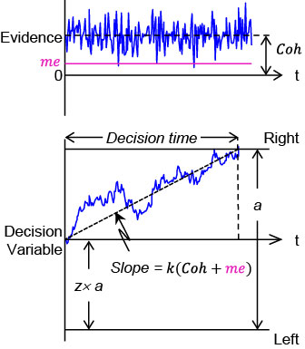

This part of the tutorial examines how the parameters below changes the psychometric function, chronometric function (mean RT), and reward outcome in a DDM with choice bias.
Parameters |
Performance |
Outcome
|
||||||||||||
|
© 2017 Long Ding